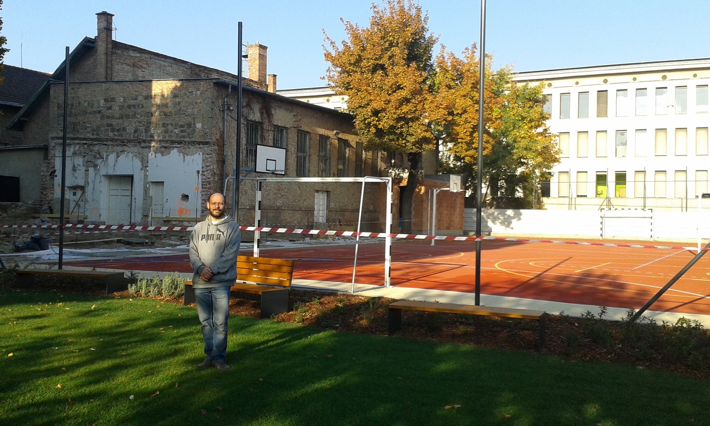

← „Bolgok, akik programoznak, mert teremtenek valamit, ami egyszercsak életre kel és működik.”Mt 5,1-10
2018. október 13. – friss kép a Kosciról

Nem tudom, mennyire közismert, a Kosci épületét a Szent Gellért suli
kapja meg (itt tanít a feleségem, ez a régi Krisztina suli,
tehát a régi két nagy rivális most már egy intézmény lesz).
Most épp nagy erőkkel felújítják.
Szóval ismét rendes iskola lesz a Kosci és szép is lesz! :)
A helyszínt egy Gellértes ismerőssel
a Szilágyiból kerítésen átmászva közelítettük meg.
A képen a nagyudvart látjuk, előtér: sztem extra menő füves-pados rész.
Háttérben: a régi tornaterem (mellette (=gödör) egy teljesen új épületrész
készül, ez lesz tudtommal az ebédlő) + a vadiúj sportpálya
(foci, röpi és keresztben 2db kosárpálya.)
A mögöttem lévő kapu és a jobbsó fekete oszlop között látszik
egy kisebb fehér oszlop, ez a röpiháló kifeszítésre szolgál.
Nekem elsőre fura volt a focipálya közepén elhelyezett oszlop,
de mint kiderült, ez olyan, hogy ki lehet simán szedni,
a lyukat egy kis dugóval bedugni, és mehet a foci.
Szóval nagyon moduláris. Itt tartunk. :)